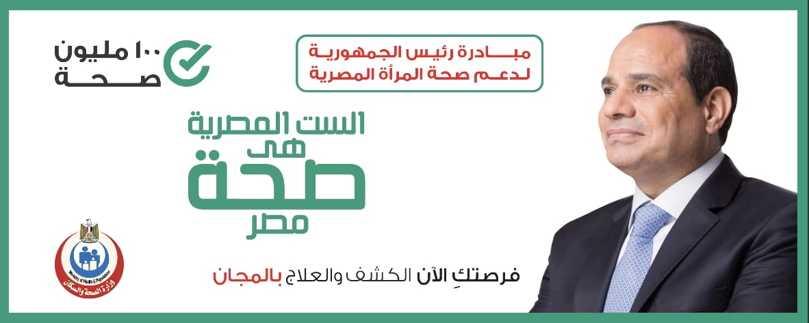

الحملة القومية للقضاء على فيروس سـي
والكشف عن الأمراض غير السارية

فى اطار حرص الدولة المصرية على الاهتمام بصحة المواطن وتقديم افضل خدمات الرعاية الطبية والصحية تم الاعلان عن
مبادرة السيد رئيس الجمهورية للقضاء على فيروس سي والكشف عن الأمراض غير السارية من خلال تكليف كافة قطاعات الدولة بالمشاركة وفي مقدمتها وزارة الصحة والسكان بتقديم الدعم الكامل لتلك المبادرة للكشف المبكر عن الإصابة بفيروس سي والأمراض غير السارية لأكثر من 50 مليون مواطن مصري.
وفى هذا الاطار تم انشاء هذا الموقع للتعريف بمرض السرطان وسبل الوقاية منه لانه يعتبر اخطر امراض العصر الحالى وخاصة للاطفال. وقد تشرفت بتكريمى من قبل الجمعية المصرية لابحاث السرطان عن المشاركة فى المؤتمر السنوى لهذا العام تحت رعاية د. محمد لبيب مدير الجمعية
ما هو السرطان
كلمة سرطان تصف مجموعة من الأمراض وليس مرضًا واحدًا، حيث تقوم الخلايا السرطانية بالانقسام بشكل عشوائي ودون احتياج الجسم، ثم تبدأ في اختراق الأنسجة المجاورة، وتنتشر إلى أجزاء أخرى من الجسم
الخلايا الطبيعية تنمو وتنقسم بطريقة منتظمة حسب احتياج الجسم
حقائق رئيسية لمرض السرطان
يصاب بالسرطان كل عام بنحو 400000 طفل ، اكثر انواع السرطان شيوعا هو سرطان الدم (اللوكيميا) وهو سرطان خلايا الدم البيضاء، ودور خلايا الدم البيضاء، يكون المساعدة في مكافحة العدوى
ومن انواع السرطان الاخرى :
سرطان الرئة
الاورام الكبدية. هذا المرض يُصيب الأطفال منذ الولادة حتى حوالي 3 سنوات من العمر، يُمكن أن تنتشر الخلايا السرطانية الكبدية إلى مناطق أخرى من الجسم، ولكن هذا أمر نادر الحدوث
سرطان المعدة الذي يسمي (Bowel cencer)
اورام العظام : هو سرطان يبدأ في العظم نفسه (سرطان عظم أولي) ونسبته تمثل 6% من جميع أنواع السرطانات الأخرى، هذه السرطانات تصيب الأطفال أكثر من الكبار. أكثر أنواع سرطان العظام الأولية شيوعا
ومن انجازات مصر قدمت لنا العديد من الأشياء مثل: انشاء المراكز الصحية حيث تم بناء مستشفي 57357

.jpeg)